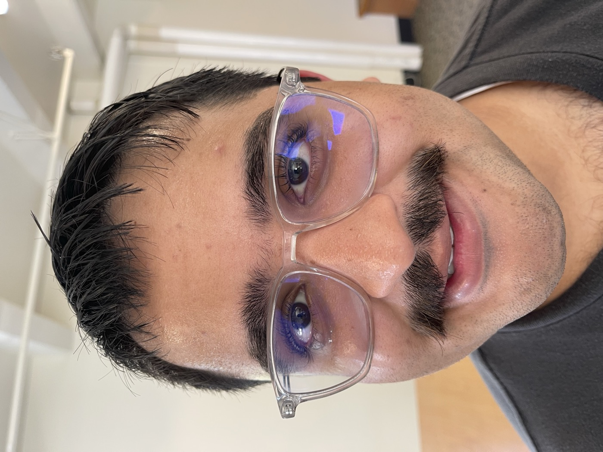
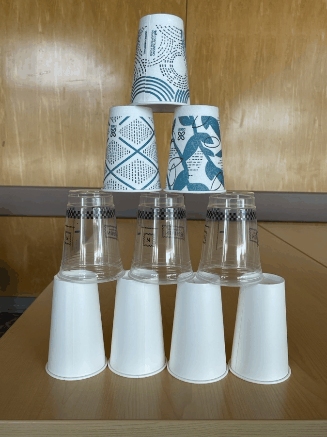

Project 0: Becoming Friends with Your Camera
Shot with the default iPhone camera.
CS180/CS280A
Due Sep 2, 2025 at 11:59 PM
Mansoor Mamnoon
I tried to understand how distance and framing change how things look. Same phone. Same lens. I moved my feet and paid attention to what felt different.
Part 1 – Selfie: Wrong vs Right
Growth: I used to think “zoom” fixes portraits. Here I learned distance is the real lever. Backing up fixed the look without changing gear.
Part 2 – Architectural Perspective Compression

Growth: I matched the size of the buildings in both shots and only changed where I stood. It made the “compression” idea click for me.
Part 3 – Dolly Zoom
Move back and keep the subject size

Growth: Walking back while keeping the subject the same size made the background breathe. It connected distance and field of view in a way I could feel, not just read about.
Takeaways
- Distance sets perspective. Framing sets what we see.
- For portraits I’ll step back first, then frame.
- For scenes I’ll choose distance to control how flat or deep it feels.